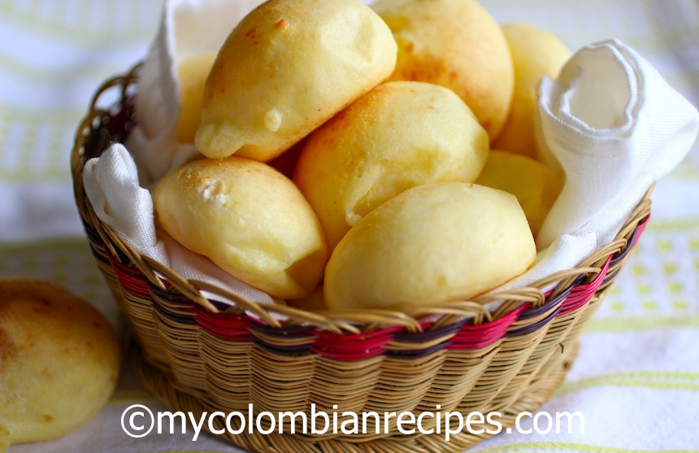

Pandebono

Description
Pandebono is a bread made with masarepa, yuca flour, cheese and egg. This Colombian cheese bread is very popular, easy to make and delicious.
These wonderful Colombian pandebonos are perfect for breakfast or for an afternoon snack with a cup of coffee. This bread recipe is also gluten free.
Ingredients
- ⅔ Cup Cassava Starch or Yuca Flour
- ¼ Cup Precooked Cornmeal or Masarepa
- 1 Colombian Quesito
- 1 + ¼ Cup Feta Cheese
- 1 Large Egg
Steps
- Pre-heat the oven to 400°F.
- In a food processor, place the yuca flour, cheese and masarepa. Process until well combined. Add the egg slowly while food processor is running.
- Divide the mixture into 12 equal size portions, shaping them into balls.
- Place on a baking sheet lined with parchment paper and bake for about 15 to 20 minutes or until golden on top. Serve warm.